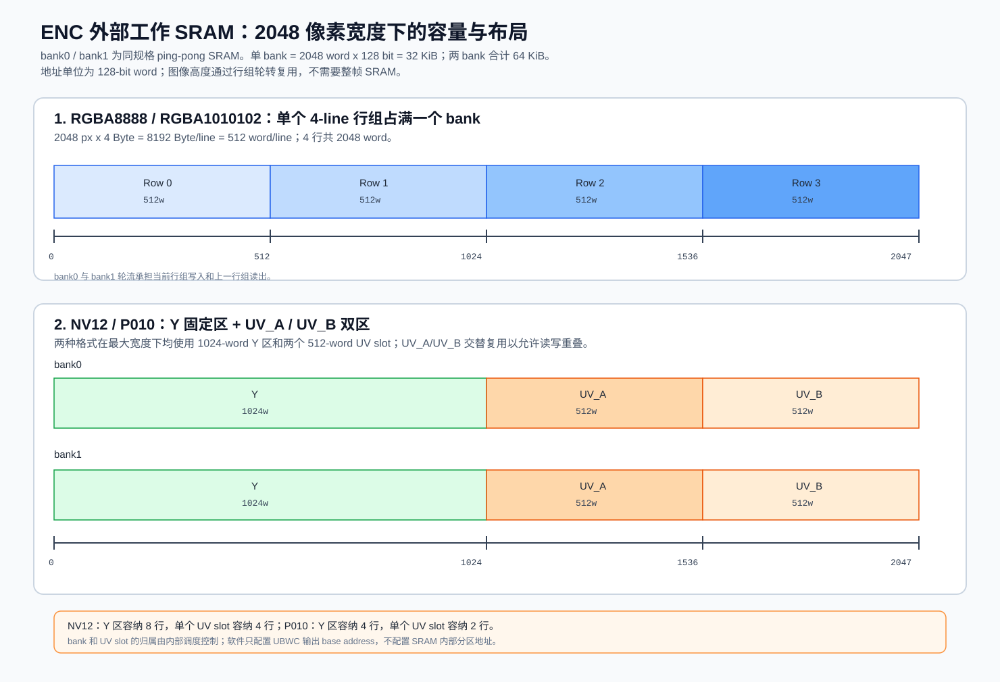
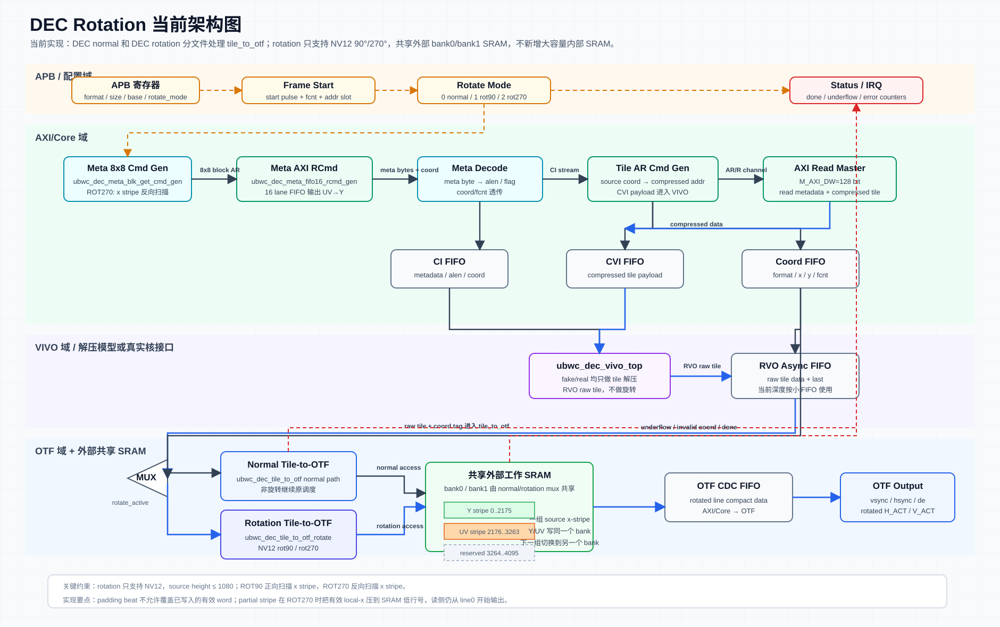
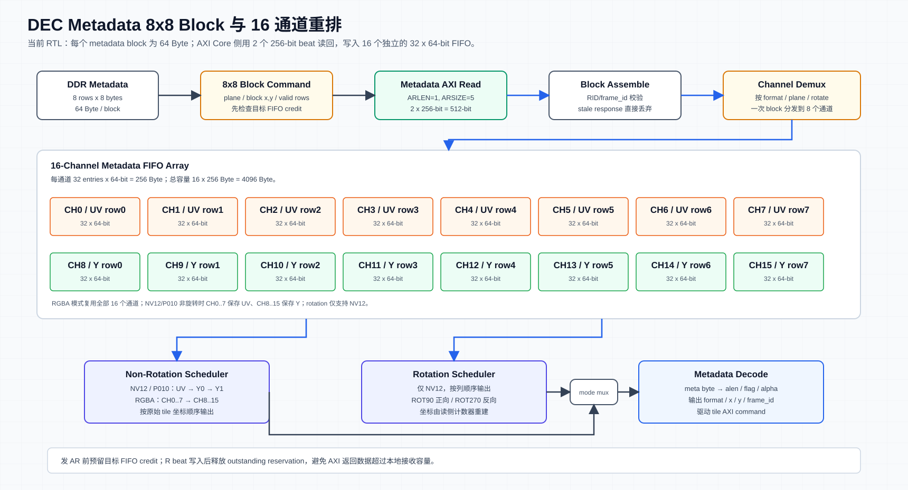
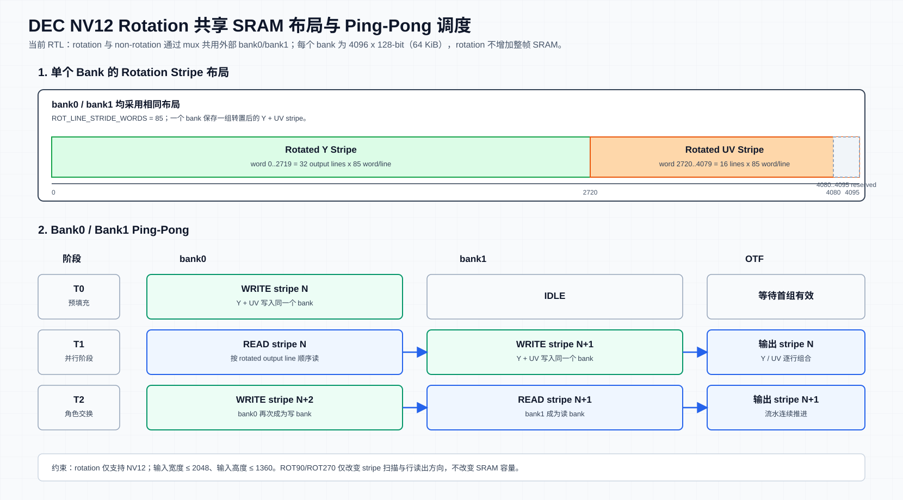

本文整理当前 UBWC ENC/DEC wrapper、APB 寄存器、软件配置流程、调试方案和 PPA 约束。ENC 与 DEC 分开描述，每个模块都按 1 Feature、2 Interface、3 Register、4 Diagram、5 Work Mode、6 Debug、7 PPA 的结构组织。
版本变更记录
| 版本 | 日期 | 影响范围 | 修改内容 |
|---|---|---|---|
| R0.13-dev | 2026-07-29 | ENC、DEC | 接口、寄存器、SRAM、工作模式、旋转能力、调试方法和 PPA 约束同步到当前实现。 |
ENC
ENC 1. Feature
ENC 将输入 OTF 像素流编码为 UBWC compressed tile 数据和 metadata，并通过 AXI write master 写入外部 memory。
| 特性 | 说明 |
|---|---|
| 输入接口 | OTF input，包含 vsync/hsync/de/data/fcnt/lcnt/ready；外部 i_otf_fcnt[3:0] 随像素、tile、metadata 和内部 AXI ID 链路传递 |
| 输出接口 | AXI write master，分别写 compressed tile 数据和 metadata |
| 推荐时钟 | APB/PCLK 100 MHz；AXI/i_axi_clk 500 MHz；Core/i_vivo_clk 200 MHz；OTF/i_otf_clk 320 MHz |
| 支持格式 | RGBA8888、RGBA1010102、YUV420_8/NV12、YUV420_10/P010、RGBA8888 lossy 2:1 |
| 支持像素尺寸 | 当前 COM_BUF_AW=11 的外部 SRAM 规格支持最大有效宽度 2048 px；高度由 12-bit line count 和系统场景共同约束，不占用额外整帧 SRAM |
| SRAM | bank0/bank1 各为 2048 x 128-bit = 32 KiB，两 bank 合计 64 KiB。高度通过行组复用 SRAM，不随图像高度线性增加 |
| AXI | 对外写数据 128 bit，AWLEN 8 bit；AWID/BID 为 5 bit，低 4 bit 承载 FCNT/内部 ID |
| 连续帧 | 每个输入 VSYNC 上升沿触发一次 AXI drain 和 ENC 帧级全链路复位；复位释放后，硬件使用最近一次 START 提交的配置处理该帧 |
| 配置提交 | REG_IRQ_CTRL[5] START 只校验并锁存完整配置快照；已提交配置在下一次 START 前保持不变 |
| 输出地址 | 仅一组 Y/RGBA metadata、Y/RGBA tile、UV metadata、UV tile base；START 锁存后跨帧复用，fcnt[0] 不参与地址选择 |
| 非法 OTF 输入 | 未进入有效帧时 o_otf_ready 仍为 1，输入数据被丢弃；VSYNC 前出现 HSYNC/DE、行长或帧高错误会锁存错误并触发 abort/drain |
| 中断 | 正确中断在本帧最终输出及 AXI 写完成后产生；错误中断覆盖配置/地址无效、OTF 行帧协议、FIFO、metadata、VIVO 和 AXI drain 异常 |
ENC 2. Interface
ENC wrapper 参数：
| 参数 | 默认值 | 说明 |
|---|---|---|
SB_WIDTH |
36 | VIVO sideband width |
APB_AW |
16 | APB byte address width |
APB_DW |
32 | APB data width |
APB_BLK_NREG |
64 | APB register count |
AXI_AW |
64 | AXI address width |
AXI_DW |
128 | 对外 AXI data width |
AXI_LENW |
8 | 对外 AXI burst length width |
AXI_IDW |
4 | 内部 AXI ID/FCNT width；wrapper 对外 AWID/BID 端口为 AXI_IDW+1=5 bit |
COM_BUF_AW |
11 | SRAM word address width，单 bank 2048 words |
COM_BUF_DW |
128 | SRAM data width |
ENC wrapper port：
| 接口组 | 信号 | 方向 | 位宽 | 说明 |
|---|---|---|---|---|
| APB slave | PCLK |
input | 1 bit | APB clock |
| APB slave | PRESETn |
input | 1 bit | APB async reset, active low |
| APB slave | PSEL |
input | 1 bit | APB select |
| APB slave | PENABLE |
input | 1 bit | APB enable phase |
| APB slave | PADDR |
input | APB_AW |
APB byte address |
| APB slave | PWRITE |
input | 1 bit | APB write/read select |
| APB slave | PWDATA |
input | APB_DW |
APB write data |
| APB slave | PREADY |
output | 1 bit | APB ready |
| APB slave | PSLVERR |
output | 1 bit | APB slave error |
| APB slave | PRDATA |
output | APB_DW |
APB read data |
| AXI clock/reset | i_axi_clk |
input | 1 bit | AXI/control clock |
| AXI clock/reset | i_axi_rstn |
input | 1 bit | i_axi_clk domain active-low reset；当前 RTL 作为异步复位源使用 |
| OTF clock/reset | i_otf_clk |
input | 1 bit | OTF input clock |
| OTF clock/reset | i_otf_rstn |
input | 1 bit | i_otf_clk domain active-low reset；当前 RTL 作为异步复位源使用 |
| VIVO clock/reset | i_vivo_clk |
input | 1 bit | VIVO clock |
| VIVO clock/reset | i_vivo_rstn |
input | 1 bit | i_vivo_clk domain active-low reset；当前 RTL 作为异步复位源使用 |
| OTF input | i_otf_vsync |
input | 1 bit | Input frame sync |
| OTF input | i_otf_hsync |
input | 1 bit | Input line sync |
| OTF input | i_otf_de |
input | 1 bit | Input data enable |
| OTF input | i_otf_data |
input | 128 bit | Input pixel data |
| OTF input | i_otf_fcnt |
input | 4 bit | 当前帧编号；随像素进入 packer，并贯穿 tile、metadata 和内部 AXI ID 数据路径；fcnt[0] 仅用于统计分组和 sideband，不选择地址 |
| OTF input | i_otf_lcnt |
input | 12 bit | Input line count |
| OTF input | o_otf_ready |
output | 1 bit | ENC 对 OTF 输入的反压 |
| SRAM bank0 | o_bank0_en |
output | 1 bit | Bank0 SRAM enable |
| SRAM bank0 | o_bank0_wen |
output | 1 bit | Bank0 SRAM write enable |
| SRAM bank0 | o_bank0_addr |
output | COM_BUF_AW |
Bank0 SRAM address |
| SRAM bank0 | o_bank0_din |
output | COM_BUF_DW |
Bank0 SRAM write data |
| SRAM bank0 | i_bank0_dout |
input | COM_BUF_DW |
Bank0 SRAM read data |
| SRAM bank0 | i_bank0_dout_vld |
input | 1 bit | Bank0 SRAM read data valid |
| SRAM bank1 | o_bank1_en |
output | 1 bit | Bank1 SRAM enable |
| SRAM bank1 | o_bank1_wen |
output | 1 bit | Bank1 SRAM write enable |
| SRAM bank1 | o_bank1_addr |
output | COM_BUF_AW |
Bank1 SRAM address |
| SRAM bank1 | o_bank1_din |
output | COM_BUF_DW |
Bank1 SRAM write data |
| SRAM bank1 | i_bank1_dout |
input | COM_BUF_DW |
Bank1 SRAM read data |
| SRAM bank1 | i_bank1_dout_vld |
input | 1 bit | Bank1 SRAM read data valid |
| AXI AW | o_m_axi_awid |
output | 5 bit | 对外 AXI AW ID；内部有效 FCNT/ID 语义为低 4 bit |
| AXI AW | o_m_axi_awaddr |
output | AXI_AW |
AXI AW address |
| AXI AW | o_m_axi_awlen |
output | AXI_LENW |
AXI AW burst length |
| AXI AW | o_m_axi_awsize |
output | 3 bit | AXI AW beat size |
| AXI AW | o_m_axi_awburst |
output | 2 bit | AXI AW burst type |
| AXI AW | o_m_axi_awlock |
output | 2 bit | AXI AW lock |
| AXI AW | o_m_axi_awcache |
output | 4 bit | AXI AW cache attribute |
| AXI AW | o_m_axi_awprot |
output | 3 bit | AXI AW protection attribute |
| AXI AW | o_m_axi_awvalid |
output | 1 bit | AXI AW valid |
| AXI AW | i_m_axi_awready |
input | 1 bit | AXI AW ready |
| AXI W | o_m_axi_wdata |
output | AXI_DW |
AXI W data |
| AXI W | o_m_axi_wstrb |
output | AXI_DW/8 |
AXI W byte strobe |
| AXI W | o_m_axi_wvalid |
output | 1 bit | AXI W valid |
| AXI W | o_m_axi_wlast |
output | 1 bit | AXI W last beat |
| AXI W | i_m_axi_wready |
input | 1 bit | AXI W ready |
| AXI B | i_m_axi_bid |
input | 5 bit | 对外 AXI B ID；低 4 bit 对应内部 FCNT/ID 语义 |
| AXI B | i_m_axi_bresp |
input | 2 bit | AXI B response |
| AXI B | i_m_axi_bvalid |
input | 1 bit | AXI B valid |
| AXI B | o_m_axi_bready |
output | 1 bit | AXI B ready |
| Done/IRQ | o_stage_done |
output | 8 bit | Stage done bitmap |
| Done/IRQ | o_frame_done |
output | 1 bit | Frame done flag |
| Done/IRQ | o_irq |
output | 1 bit | Interrupt output |
ENC 3. Register
ENC register 总表：
以下总表按 field 逐行展开，说明 列给出每个 field 的用途和软件配置注意事项。
| Offset | Register | Access | Reset | Bit | Field | 说明 |
|---|---|---|---|---|---|---|
0x0000 |
REG_VERSION |
RO | 0x00010000 |
[31:0] |
version |
IP version，上电后读一次确认软件/RTL 兼容性。 |
0x0004 |
REG_DATE |
RO | 0x20260406 |
[31:0] |
date |
RTL date，上电后读一次。 |
0x0008 |
REG_TILE_CFG0 |
RW | 0 |
[0] |
enc_ubwc_en |
ENC UBWC enable；格式/尺寸/layout 变化时配置。 |
0x0008 |
REG_TILE_CFG0 |
RW | 0 |
[1] |
lvl1_bank_swizzle_en |
Level-1 bank swizzle 配置和 AP 配置同步。 |
0x0008 |
REG_TILE_CFG0 |
RW | 0 |
[2] |
lvl2_bank_swizzle_en |
Level-2 bank swizzle 配置和 AP 配置同步。 |
0x0008 |
REG_TILE_CFG0 |
RW | 0 |
[3] |
lvl3_bank_swizzle_en |
Level-3 bank swizzle 配置和 AP 配置同步。 |
0x0008 |
REG_TILE_CFG0 |
RW | 0 |
[12:8] |
highest_bank_bit |
highest bank bit 配置和 AP 配置同步。 |
0x0008 |
REG_TILE_CFG0 |
RW | 0 |
[16] |
bank_spread_en |
bank spread 配置和 AP 配置同步。 |
0x000c |
REG_TILE_CFG1 |
RW | 0 |
[0] |
four_line_format |
不同图像格式配置：RGBA/RGBA10 写 1；YUV420/NV12/P010 写 0。 |
0x000c |
REG_TILE_CFG1 |
RW | 0 |
[1] |
is_lossy_rgba_2_1_format |
RGBA 2:1 lossy format select。 |
0x000c |
REG_TILE_CFG1 |
RW | 0 |
[26:16] |
tile_pitch |
Compressed tile pitch，单位为 16 bytes。 |
0x0010 |
REG_ENC_CI_CFG0 |
RW | 0 |
[0] |
enc_ci_input_type |
CI input type 配置；1=tiled data，0=linear data；寄存器复位值为 0，普通 tiled UBWC 路径软件应配置为 1。 |
0x0010 |
REG_ENC_CI_CFG0 |
RW | 0 |
[10:8] |
enc_ci_alen |
CI alen 配置；寄存器复位值为 0，普通 VIVO_ENC 配置软件应写 7。 |
0x0014 |
REG_ENC_CI_CFG1 |
RW | 0 |
[16] |
enc_ci_lossy |
lossy 模式使能。 |
0x0018 |
REG_ENC_CI_CFG2 |
RW | 0 |
[2:0] |
cfg0 |
VIVO_ENC 模块使用，默认写 0；除非 VIVO_ENC 集成规格明确要求，否则软件保持 0。 |
0x0018 |
REG_ENC_CI_CFG2 |
RW | 0 |
[5:3] |
cfg1 |
VIVO_ENC 模块使用，默认写 0；除非 VIVO_ENC 集成规格明确要求，否则软件保持 0。 |
0x0018 |
REG_ENC_CI_CFG2 |
RW | 0 |
[9:6] |
cfg2 |
VIVO_ENC 模块使用，默认写 0；除非 VIVO_ENC 集成规格明确要求，否则软件保持 0。 |
0x0018 |
REG_ENC_CI_CFG2 |
RW | 0 |
[13:10] |
cfg3 |
VIVO_ENC 模块使用，默认写 0；除非 VIVO_ENC 集成规格明确要求，否则软件保持 0。 |
0x0018 |
REG_ENC_CI_CFG2 |
RW | 0 |
[17:14] |
cfg4 |
VIVO_ENC 模块使用，默认写 0；除非 VIVO_ENC 集成规格明确要求，否则软件保持 0。 |
0x0018 |
REG_ENC_CI_CFG2 |
RW | 0 |
[21:18] |
cfg5 |
VIVO_ENC 模块使用，默认写 0；除非 VIVO_ENC 集成规格明确要求，否则软件保持 0。 |
0x0018 |
REG_ENC_CI_CFG2 |
RW | 0 |
[23:22] |
cfg6 |
VIVO_ENC 模块使用，默认写 0；除非 VIVO_ENC 集成规格明确要求，否则软件保持 0。 |
0x0018 |
REG_ENC_CI_CFG2 |
RW | 0 |
[25:24] |
cfg7 |
VIVO_ENC 模块使用，默认写 0；除非 VIVO_ENC 集成规格明确要求，否则软件保持 0。 |
0x0018 |
REG_ENC_CI_CFG2 |
RW | 0 |
[27:26] |
cfg8 |
VIVO_ENC 模块使用，默认写 0；除非 VIVO_ENC 集成规格明确要求，否则软件保持 0。 |
0x0018 |
REG_ENC_CI_CFG2 |
RW | 0 |
[30:28] |
cfg9 |
VIVO_ENC 模块使用，默认写 0；除非 VIVO_ENC 集成规格明确要求，否则软件保持 0。 |
0x001c |
REG_ENC_CI_CFG3 |
RW | 0 |
[5:0] |
cfg10 |
VIVO_ENC 模块使用，默认写 0；除非 VIVO_ENC 集成规格明确要求，否则软件保持 0。 |
0x001c |
REG_ENC_CI_CFG3 |
RW | 0 |
[13:8] |
cfg11 |
VIVO_ENC 模块使用，默认写 0；除非 VIVO_ENC 集成规格明确要求，否则软件保持 0。 |
0x001c |
REG_ENC_CI_CFG3 |
RW | 7 |
[19:16] |
enc_ci_ubwc_ver |
送入 VIVO_ENC 的 UBWC version；当前 RTL 默认 7。 |
0x0020 |
REG_OTF_CFG0 |
RW | 0 |
[2:0] |
otf_cfg_format |
输入格式：0 RGBA8888，1 RGBA1010102，2 NV12，3 P010。 |
0x0024 |
REG_OTF_CFG1 |
RW | 0 |
[15:0] |
otf_cfg_width |
输入 active width。 |
0x0024 |
REG_OTF_CFG1 |
RW | 0 |
[31:16] |
otf_cfg_height |
输入 active height。 |
0x0028 |
REG_OTF_CFG2 |
RW | 0 |
[15:0] |
otf_cfg_tile_w |
Tile width。 |
0x0028 |
REG_OTF_CFG2 |
RW | 0 |
[19:16] |
otf_cfg_tile_h |
Tile height。 |
0x002c |
REG_OTF_CFG3 |
RW | 0 |
[15:0] |
otf_cfg_y_tile_cols |
Y/RGBA plane tile column count。 |
0x002c |
REG_OTF_CFG3 |
RW | 0 |
[31:16] |
otf_cfg_uv_tile_cols |
UV plane tile column count；RGBA 写 0。 |
0x0030 |
REG_META_BASE_Y_LO |
RW | 0 |
[31:0] |
meta_y_base_offset_addr[31:0] |
唯一 Y/RGBA metadata 存储基地址低 32 bit；首次或输出 buffer 地址变化时配置。 |
0x0034 |
REG_META_BASE_Y_HI |
RW | 0 |
[31:0] |
meta_y_base_offset_addr[63:32] |
唯一 Y/RGBA metadata 存储基地址高 32 bit；首次或输出 buffer 地址变化时配置。 |
0x0038 |
REG_TILE_BASE_Y_LO |
RW | 0 |
[31:0] |
y_base_offset_addr[31:0] |
唯一 Y/RGBA compressed tile 存储基地址低 32 bit；首次或输出 buffer 地址变化时配置。 |
0x003c |
REG_TILE_BASE_Y_HI |
RW | 0 |
[31:0] |
y_base_offset_addr[63:32] |
唯一 Y/RGBA compressed tile 存储基地址高 32 bit；首次或输出 buffer 地址变化时配置。 |
0x0040 |
REG_META_BASE_UV_LO |
RW | 0 |
[31:0] |
meta_uv_base_offset_addr[31:0] |
UV metadata 存储基地址低 32 bit；RGBA 写 0。 |
0x0044 |
REG_META_BASE_UV_HI |
RW | 0 |
[31:0] |
meta_uv_base_offset_addr[63:32] |
UV metadata 存储基地址高 32 bit；RGBA 写 0。 |
0x0048 |
REG_TILE_BASE_UV_LO |
RW | 0 |
[31:0] |
uv_base_offset_addr[31:0] |
UV compressed tile 存储基地址低 32 bit；RGBA 写 0。 |
0x004c |
REG_TILE_BASE_UV_HI |
RW | 0 |
[31:0] |
uv_base_offset_addr[63:32] |
UV compressed tile 存储基地址高 32 bit；必须作为八个地址 word 的最后一笔写入，用于标记唯一工作地址组完整，随后写 START 锁存。 |
0x0050 |
REG_META_ACTIVE_SIZE |
RW | 0 |
[15:0] |
meta_active_width_px |
Metadata 有效图像宽度。 |
0x0050 |
REG_META_ACTIVE_SIZE |
RW | 0 |
[31:16] |
meta_active_height_px |
Metadata 有效图像高度。 |
0x0054 |
REG_META_PITCH |
RW | 0 |
[31:0] |
meta_data_plane_pitch |
Metadata plane pitch。 |
0x0058 |
REG_STATUS0 |
RO | dynamic | [0] |
enc_idle |
ENC idle。 |
0x0058 |
REG_STATUS0 |
RO | dynamic | [1] |
enc_error |
ENC error。 |
0x0058 |
REG_STATUS0 |
RO | dynamic | [2] |
otf_to_tile_busy |
OTF-to-tile busy。 |
0x0058 |
REG_STATUS0 |
RO | dynamic | [3] |
otf_to_tile_overflow |
OTF-to-tile overflow。 |
0x0058 |
REG_STATUS0 |
RO | dynamic | [4] |
otf_err_bline |
OTF bad line。 |
0x0058 |
REG_STATUS0 |
RO | dynamic | [5] |
otf_err_bframe |
OTF bad frame。 |
0x0058 |
REG_STATUS0 |
RO | dynamic | [6] |
meta_err_0 |
Metadata co-buffer overflow。 |
0x0058 |
REG_STATUS0 |
RO | dynamic | [7] |
meta_err_1 |
Metadata tile order error。 |
0x0058 |
REG_STATUS0 |
RO | dynamic | [8] |
frame_done |
Frame done。 |
0x0058 |
REG_STATUS0 |
RO | dynamic | [9] |
addr_cfg_invalid |
唯一地址组无效 sticky 状态；数据链路检查地址时，如果最近一次 START 锁存的 META Y、TILE Y、META UV、TILE UV 地址组无效，该 bit 置 1 并保持并参与 error IRQ。 |
0x0058 |
REG_STATUS0 |
RO | dynamic | [10] |
addr_cfg_valid |
最近一次 START 已锁存完整有效的唯一地址组；后续帧持续复用。 |
0x0058 |
REG_STATUS0 |
- | 0 |
[12:11] |
reserved |
保留，读回 0。 |
0x0058 |
REG_STATUS0 |
RO | dynamic | [13] |
rst_drain_timeout |
软复位等待 AXI drain 超时 sticky 状态；ENC 进入 soft reset 前会停止发起新的 AXI 写事务，并等待 tile/meta AXI 写通路 outstanding 清空。如果等待超过 16'hffff 个 i_axi_clk 周期仍未进入 idle，则该 bit 置 1 并保持；软件写 REG_IRQ_CTRL[1] irq_clear 或硬复位后清零。 |
0x0058 |
REG_STATUS0 |
RO | dynamic | [14] |
cfg_valid |
最近一次 START 配置提交结果。格式、尺寸、tile 参数、metadata 参数及唯一地址组均有效时置 1；否则清 0。配置无效时 OTF 端仍被 ready 接收，但数据不会进入编码链路。 |
0x005c |
REG_STATUS1 |
RO | dynamic | [0] |
output_done_seen0 |
fcnt[0]=0 的最终输出完成事件已出现。 |
0x005c |
REG_STATUS1 |
RO | dynamic | [1] |
output_done_seen1 |
fcnt[0]=1 的最终输出完成事件已出现。 |
0x005c |
REG_STATUS1 |
RO | dynamic | [2] |
tile_addr_seen0 |
fcnt[0]=0 的 tile address 活动已出现。 |
0x005c |
REG_STATUS1 |
RO | dynamic | [3] |
tile_addr_seen1 |
fcnt[0]=1 的 tile address 活动已出现。 |
0x005c |
REG_STATUS1 |
RO | dynamic | [4] |
meta_seen0 |
fcnt[0]=0 的 metadata 活动已出现。 |
0x005c |
REG_STATUS1 |
RO | dynamic | [5] |
meta_seen1 |
fcnt[0]=1 的 metadata 活动已出现。 |
0x005c |
REG_STATUS1 |
RO | dynamic | [6] |
axi_w_done_seen0 |
fcnt[0]=0 的 tile 与 metadata AXI WLAST 均已出现。 |
0x005c |
REG_STATUS1 |
RO | dynamic | [7] |
axi_w_done_seen1 |
fcnt[0]=1 的 tile 与 metadata AXI WLAST 均已出现。 |
0x0060 |
REG_IRQ_CTRL |
RW | 1 |
[0] |
irq_enable |
中断使能；当前 RTL 复位值为 1。 |
0x0060 |
REG_IRQ_CTRL |
W1P | 0 |
[1] |
irq_clear |
写 1 清 pending/status sticky。 |
0x0060 |
REG_IRQ_CTRL |
RO | dynamic | [2] |
irq_pending |
Any IRQ pending。 |
0x0060 |
REG_IRQ_CTRL |
RO | dynamic | [3] |
irq_correct_pending |
Correct IRQ pending。 |
0x0060 |
REG_IRQ_CTRL |
RO | dynamic | [4] |
irq_error_pending |
Error IRQ pending。 |
0x0060 |
REG_IRQ_CTRL |
W1P | 0 |
[5] |
start |
写 1 校验并锁存完整 ENC 配置快照；不触发帧复位，也不启动 OTF 数据处理。 |
0x0060 |
REG_IRQ_CTRL |
- | 0 |
[6] |
reserved |
保留，写入无效，读回 0。 |
0x0064 |
REG_STATUS2 |
RO | dynamic | [0] |
irq_status_any |
Any IRQ mirror。 |
0x0064 |
REG_STATUS2 |
RO | dynamic | [1] |
irq_status_correct |
Correct IRQ mirror。 |
0x0064 |
REG_STATUS2 |
RO | dynamic | [2] |
irq_status_error |
Error IRQ mirror。 |
0x0068 |
REG_META_COUNT0 |
RO | dynamic | [31:0] |
meta_count0 |
fcnt[0]=0 的 metadata 统计计数，与地址选择无关。 |
0x006c |
REG_META_COUNT1 |
RO | dynamic | [31:0] |
meta_count1 |
fcnt[0]=1 的 metadata 统计计数，与地址选择无关。 |
0x0070 |
REG_TILEADDR_COUNT0 |
RO | dynamic | [31:0] |
tileaddr_count0 |
fcnt[0]=0 的 tile address 统计计数。 |
0x0074 |
REG_TILEADDR_COUNT1 |
RO | dynamic | [31:0] |
tileaddr_count1 |
fcnt[0]=1 的 tile address 统计计数。 |
0x0078 |
REG_OTF_TILE_COUNT0 |
RO | dynamic | [31:0] |
otf_tile_count0 |
fcnt[0]=0 的 OTF-to-tile tile 统计计数。 |
0x007c |
REG_OTF_TILE_COUNT1 |
RO | dynamic | [31:0] |
otf_tile_count1 |
fcnt[0]=1 的 OTF-to-tile tile 统计计数。 |
0x0080 |
REG_OTF_DE_COUNT0 |
RO | dynamic | [31:0] |
otf_de_count0 |
fcnt[0]=0 的 de && ready 统计计数。 |
0x0084 |
REG_OTF_DE_COUNT1 |
RO | dynamic | [31:0] |
otf_de_count1 |
fcnt[0]=1 的 de && ready 统计计数。 |
0x0088 |
REG_OTF_LINE_COUNT0 |
RO | dynamic | [31:0] |
otf_line_count0 |
fcnt[0]=0 的 OTF line 统计计数。 |
0x008c |
REG_OTF_LINE_COUNT1 |
RO | dynamic | [31:0] |
otf_line_count1 |
fcnt[0]=1 的 OTF line 统计计数。 |
0x0090 |
REG_TILE_AXI_W_CNT0 |
RO | dynamic | [31:0] |
tile_axi_w_cnt0 |
fcnt[0]=0 的 tile AXI W 统计计数。 |
0x0094 |
REG_TILE_AXI_W_CNT1 |
RO | dynamic | [31:0] |
tile_axi_w_cnt1 |
fcnt[0]=1 的 tile AXI W 统计计数。 |
0x0098 |
REG_META_AXI_W_CNT0 |
RO | dynamic | [31:0] |
meta_axi_w_cnt0 |
fcnt[0]=0 的 metadata AXI W 统计计数。 |
0x009c |
REG_META_AXI_W_CNT1 |
RO | dynamic | [31:0] |
meta_axi_w_cnt1 |
fcnt[0]=1 的 metadata AXI W 统计计数。 |
APB 访问规则：
| 项目 | 规则 |
|---|---|
| 寄存器宽度 | 32 bit |
| 地址单位 | Byte offset，4 byte 对齐 |
| 64 bit base address | 先写 low 32 bit，再写 high 32 bit |
PREADY/PSLVERR |
当前 RTL 固定 PREADY=1，PSLVERR=0 |
W1P |
写 1 产生 pulse，读回值不表示该 bit 保持为 1 |
ENC Register 逐项说明：
3.1 Version
寄存器：REG_VERSION；地址：0x0000
| Bit | Field | Access | Reset | 说明 |
|---|---|---|---|---|
[31:0] |
version |
RO | 0x00010000 |
IP version。 |
计算说明：只读识别寄存器，无软件计算；上电后读取一次用于版本匹配。
3.2 Date
寄存器：REG_DATE；地址：0x0004
| Bit | Field | Access | Reset | 说明 |
|---|---|---|---|---|
[31:0] |
date |
RO | 0x20260406 |
RTL date。 |
计算说明：只读识别寄存器，无软件计算；用于定位当前 RTL 交付版本。
3.3 Tile CFG0
寄存器：REG_TILE_CFG0；地址：0x0008
| Bit | Field | Access | Reset | 说明 |
|---|---|---|---|---|
[0] |
enc_ubwc_en |
RW | 0 | ENC UBWC enable。 |
[1] |
lvl1_bank_swizzle_en |
RW | 0 | Level-1 bank swizzle 配置和 AP 配置同步。 |
[2] |
lvl2_bank_swizzle_en |
RW | 0 | Level-2 bank swizzle 配置和 AP 配置同步。 |
[3] |
lvl3_bank_swizzle_en |
RW | 0 | Level-3 bank swizzle 配置和 AP 配置同步。 |
[12:8] |
highest_bank_bit |
RW | 0 | highest bank bit 配置和 AP 配置同步。 |
[16] |
bank_spread_en |
RW | 0 | bank spread 配置和 AP 配置同步。 |
计算说明：这些字段来自系统 memory layout/bank swizzle 策略，不随每帧地址变化；图像格式、尺寸或 layout 策略变化时重新配置。
3.4 Tile CFG1
寄存器：REG_TILE_CFG1；地址：0x000c
| Bit | Field | Access | Reset | 说明 |
|---|---|---|---|---|
[0] |
four_line_format |
RW | 0 | 不同图像格式配置：RGBA/RGBA10 写 1；YUV420/NV12/P010 写 0。 |
[1] |
is_lossy_rgba_2_1_format |
RW | 0 | RGBA 2:1 lossy format select。 |
[26:16] |
tile_pitch |
RW | 0 | Compressed tile pitch，单位为 16 bytes。 |
计算说明：tile_pitch = tile_pitch_bytes / 16。tile_pitch_bytes 由格式和有效宽度对齐得到：RGBA 按 4 bytes/pixel 计算，NV12/P010 按 plane pitch 计算，并按 UBWC layout 要求对齐。
3.5 ENC CI CFG0
寄存器：REG_ENC_CI_CFG0；地址：0x0010
| Bit | Field | Access | Reset | 说明 |
|---|---|---|---|---|
[0] |
enc_ci_input_type |
RW | 0 | CI input type 配置；1=tiled data，0=linear data；寄存器复位值为 0，普通 tiled UBWC 路径软件应配置为 1。 |
[10:8] |
enc_ci_alen |
RW | 0 | CI alen 配置；寄存器复位值为 0，普通 VIVO_ENC 配置软件应写 7。 |
计算说明：REG_ENC_CI_CFG0 复位值为 0x0000_0000；普通 tiled UBWC 场景软件应写 input_type=1、alen=7。
3.6 ENC CI CFG1
寄存器：REG_ENC_CI_CFG1；地址：0x0014
| Bit | Field | Access | Reset | 说明 |
|---|---|---|---|---|
[16] |
enc_ci_lossy |
RW | 0 | lossy 模式使能。 |
计算说明：与压缩策略一致；lossless 场景写 0，启用对应 lossy 策略时写 1。
3.7 ENC CI CFG2
寄存器：REG_ENC_CI_CFG2；地址：0x0018
| Bit | Field | Access | Reset | 说明 |
|---|---|---|---|---|
[2:0] |
cfg0 |
RW | 0 | UBWC CI configuration。 |
[5:3] |
cfg1 |
RW | 0 | UBWC CI configuration。 |
[9:6] |
cfg2 |
RW | 0 | UBWC CI configuration。 |
[13:10] |
cfg3 |
RW | 0 | UBWC CI configuration。 |
[17:14] |
cfg4 |
RW | 0 | UBWC CI configuration。 |
[21:18] |
cfg5 |
RW | 0 | UBWC CI configuration。 |
[23:22] |
cfg6 |
RW | 0 | UBWC CI configuration。 |
[25:24] |
cfg7 |
RW | 0 | UBWC CI configuration。 |
[27:26] |
cfg8 |
RW | 0 | UBWC CI configuration。 |
[30:28] |
cfg9 |
RW | 0 | UBWC CI configuration。 |
计算说明：当前软件模板写 0；若后续 CI 算法参数开放，应由压缩策略表生成。
3.8 ENC CI CFG3
寄存器：REG_ENC_CI_CFG3；地址：0x001c
| Bit | Field | Access | Reset | 说明 |
|---|---|---|---|---|
[5:0] |
cfg10 |
RW | 0 | UBWC CI configuration。 |
[13:8] |
cfg11 |
RW | 0 | UBWC CI configuration。 |
[19:16] |
enc_ci_ubwc_ver |
RW | 7 | 送入 VIVO_ENC 的 UBWC version。 |
计算说明：cfg10/cfg11 当前软件模板写 0；enc_ci_ubwc_ver 默认 7，只有系统 UBWC 版本变化时才修改。
3.9 OTF CFG0
寄存器：REG_OTF_CFG0；地址：0x0020
| Bit | Field | Access | Reset | 说明 |
|---|---|---|---|---|
[2:0] |
otf_cfg_format |
RW | 0 | 0 RGBA8888，1 RGBA1010102，2 NV12/YUV420_8，3 P010/YUV420_10。 |
计算说明：由输入像素格式直接映射；格式变化时，tile size、pitch、metadata 尺寸和地址 layout 必须同步重算。
3.10 OTF CFG1
寄存器：REG_OTF_CFG1；地址：0x0024
| Bit | Field | Access | Reset | 说明 |
|---|---|---|---|---|
[15:0] |
otf_cfg_width |
RW | 0 | 输入 active width。 |
[31:16] |
otf_cfg_height |
RW | 0 | 输入 active height。 |
计算说明：写入原始有效像素尺寸；内部 layout 需要的 padded/stored size 由后续 tile、pitch、metadata 配置描述。
3.11 OTF CFG2
寄存器：REG_OTF_CFG2；地址：0x0028
| Bit | Field | Access | Reset | 说明 |
|---|---|---|---|---|
[15:0] |
otf_cfg_tile_w |
RW | 0 | Tile width。 |
[19:16] |
otf_cfg_tile_h |
RW | 0 | Tile height。 |
计算说明：RGBA8888/RGBA1010102 使用 16x4，NV12 使用 32x8，P010 使用 32x4。这些值随格式变化配置。
3.12 OTF CFG3
寄存器：REG_OTF_CFG3；地址：0x002c
| Bit | Field | Access | Reset | 说明 |
|---|---|---|---|---|
[15:0] |
otf_cfg_y_tile_cols |
RW | 0 | Y/RGBA plane tile column count。 |
[31:16] |
otf_cfg_uv_tile_cols |
RW | 0 | UV plane tile column count；RGBA 写 0。 |
计算说明：y_tile_cols = ceil(y_plane_width / tile_w)，uv_tile_cols = ceil(uv_plane_width / tile_w)；RGBA 没有 UV plane，uv_tile_cols=0。
3.13 Meta/Tile Base 地址组
寄存器范围：0x0030 到 0x004c。首次配置或输出 buffer 地址变化时写入；地址不变的连续帧直接复用。
| Register | Address | Bit | Field | Access | Reset | 说明 |
|---|---|---|---|---|---|---|
REG_META_BASE_Y_LO |
0x0030 |
[31:0] |
meta_y_base_offset_addr[31:0] |
RW | 0 | Y/RGBA metadata 存储基地址低 32 bit。 |
REG_META_BASE_Y_HI |
0x0034 |
[31:0] |
meta_y_base_offset_addr[63:32] |
RW | 0 | Y/RGBA metadata 存储基地址高 32 bit。 |
REG_TILE_BASE_Y_LO |
0x0038 |
[31:0] |
y_base_offset_addr[31:0] |
RW | 0 | Y/RGBA compressed tile 存储基地址低 32 bit。 |
REG_TILE_BASE_Y_HI |
0x003c |
[31:0] |
y_base_offset_addr[63:32] |
RW | 0 | Y/RGBA compressed tile 存储基地址高 32 bit。 |
REG_META_BASE_UV_LO |
0x0040 |
[31:0] |
meta_uv_base_offset_addr[31:0] |
RW | 0 | UV metadata 存储基地址低 32 bit；RGBA 写 0。 |
REG_META_BASE_UV_HI |
0x0044 |
[31:0] |
meta_uv_base_offset_addr[63:32] |
RW | 0 | UV metadata 存储基地址高 32 bit；RGBA 写 0。 |
REG_TILE_BASE_UV_LO |
0x0048 |
[31:0] |
uv_base_offset_addr[31:0] |
RW | 0 | UV compressed tile 存储基地址低 32 bit；RGBA 写 0。 |
REG_TILE_BASE_UV_HI |
0x004c |
[31:0] |
uv_base_offset_addr[63:32] |
RW | 0 | UV compressed tile 存储基地址高 32 bit；RGBA 写 0。 |
地址 layout 计算公式：
align(x, a) = round_up(x, a)
y_tile_cols = ceil(y_plane_width / tile_w)
y_tile_rows = ceil(y_plane_height / tile_h)
uv_tile_cols = has_uv ? ceil(uv_plane_width / tile_w) : 0
uv_tile_rows = has_uv ? ceil(uv_plane_height / tile_h) : 0
meta_y_pitch = align(y_tile_cols, 64)
meta_y_size = align(meta_y_pitch * align(y_tile_rows, 16), 4096)
tile_y_size = align(tile_y_pitch_bytes * stored_y_height, 4096)
meta_uv_pitch = has_uv ? align(uv_tile_cols, 64) : 0
meta_uv_size = has_uv ? align(meta_uv_pitch * align(uv_tile_rows, 16), 4096) : 0
tile_uv_size = has_uv ? align(tile_uv_pitch_bytes * stored_uv_height, 4096) : 0
meta_y_base = frame_base
tile_y_base = meta_y_base + meta_y_size
meta_uv_base = has_uv ? tile_y_base + tile_y_size : 0
tile_uv_base = has_uv ? meta_uv_base + meta_uv_size : 0
REG_META_BASE_Y_LO = meta_y_base[31:0]
REG_META_BASE_Y_HI = meta_y_base[63:32]
REG_TILE_BASE_Y_LO = tile_y_base[31:0]
REG_TILE_BASE_Y_HI = tile_y_base[63:32]
REG_META_BASE_UV_LO = meta_uv_base[31:0]
REG_META_BASE_UV_HI = meta_uv_base[63:32]
REG_TILE_BASE_UV_LO = tile_uv_base[31:0]
REG_TILE_BASE_UV_HI = tile_uv_base[63:32]
说明：tile_y_pitch_bytes、tile_uv_pitch_bytes、stored_y_height、stored_uv_height 由格式、pitch 和 UBWC layout 对齐规则计算，必须和 REG_TILE_CFG1、REG_META_ACTIVE_SIZE、REG_META_PITCH 保持一致。地址组写完后，软件写 REG_IRQ_CTRL[5]=1 校验并锁存完整配置，再读取 REG_STATUS0[14] 确认提交有效。
3.14 Meta Active Size
寄存器：REG_META_ACTIVE_SIZE；地址：0x0050
| Bit | Field | Access | Reset | 说明 |
|---|---|---|---|---|
[15:0] |
meta_active_width_px |
RW | 0 | UBWC metadata 覆盖的有效图像宽度。 |
[31:16] |
meta_active_height_px |
RW | 0 | UBWC metadata 覆盖的有效图像高度。 |
计算说明：
REG_OTF_CFG1 描述 OTF 输入流的 active width/height，也就是硬件在 OTF 接口上接收的图像/画布尺寸。
REG_META_ACTIVE_SIZE 描述 UBWC metadata 和边界 tile 需要覆盖的有效图像区域。当前 RTL 直接使用该寄存器，不提供写 0 后回退到 REG_OTF_CFG1 的逻辑；START 合法性检查要求宽、高均非 0，并满足对应格式的 tile 对齐。
通常没有 padding/crop 时，两者配置一致。例如 544x1200 RGBA8888：
REG_OTF_CFG1.width = 544
REG_OTF_CFG1.height = 1200
REG_META_ACTIVE_SIZE.width = 544
REG_META_ACTIVE_SIZE.height= 1200
只有当 OTF 输入画布尺寸和真实有效压缩区域不一致时才分开配置。例如 OTF 实际输入 544x1216，但只有 544x1200 是有效图像：
REG_OTF_CFG1.height = 1216
REG_META_ACTIVE_SIZE.height= 1200
这种配置表示 OTF 接口按 1216 行接收数据，但 UBWC metadata、有效 tile 覆盖和右/下边界处理按 1200 行有效图像生成。
3.15 Meta Pitch
寄存器：REG_META_PITCH；地址：0x0054
| Bit | Field | Access | Reset | 说明 |
|---|---|---|---|---|
[31:0] |
meta_data_plane_pitch |
RW | 0 | Metadata plane pitch，单位 byte。 |
计算说明：meta_data_plane_pitch = align(y_tile_cols, 64)，即按 tile columns 生成 metadata 行 pitch 并 64-byte 对齐。
3.16 Status0
寄存器：REG_STATUS0；地址：0x0058
| Bit | Field | Access | Reset | 说明 |
|---|---|---|---|---|
[0] |
enc_idle |
RO | dynamic | ENC idle。 |
[1] |
enc_error |
RO | dynamic | ENC error。 |
[2] |
otf_to_tile_busy |
RO | dynamic | OTF-to-tile busy。 |
[3] |
otf_to_tile_overflow |
RO | dynamic | OTF-to-tile overflow。 |
[4] |
otf_err_bline |
RO | dynamic | OTF bad line。 |
[5] |
otf_err_bframe |
RO | dynamic | OTF bad frame。 |
[6] |
meta_err_0 |
RO | dynamic | Metadata co-buffer overflow。 |
[7] |
meta_err_1 |
RO | dynamic | Metadata tile order error。 |
[8] |
frame_done |
RO | dynamic | Frame done。 |
[9] |
addr_cfg_invalid |
RO | dynamic | 唯一地址组无效 sticky 状态；数据链路检查地址时，如果最近一次 START 锁存的四个 64-bit base 不完整，该 bit 置 1 并保持并参与 error IRQ。 |
[10] |
addr_cfg_valid |
RO | dynamic | 最近一次 START 已锁存完整有效的唯一地址组；后续帧持续复用。 |
[12:11] |
reserved |
- | 0 | 保留，读回 0。 |
[13] |
rst_drain_timeout |
RO | dynamic | 软复位等待 AXI drain 超时 sticky 状态；ENC 进入 soft reset 前会停止发起新的 AXI 写事务，并等待 tile/meta AXI 写通路 outstanding 清空。如果等待超过 16'hffff 个 i_axi_clk 周期仍未进入 idle，则该 bit 置 1 并保持；软件写 REG_IRQ_CTRL[1] irq_clear 或硬复位后清零。 |
[14] |
cfg_valid |
RO | dynamic | 最近一次 START 提交的配置有效标志；为 0 时输入不会进入编码链路。 |
计算说明：只读状态由硬件实时或 sticky 产生；软件无需计算，可用于判断配置提交、地址配置、中断来源、OTF 输入异常和复位 drain 是否异常。cfg_valid=0 表示最近一次 START 提交未通过完整性检查；o_otf_ready 在未运行状态仍保持 1 以吞掉异常输入，但数据被门控丢弃。软件应补齐工作寄存器和唯一地址组后重新写 START。addr_cfg_valid=1 表示该地址组已锁存并可跨帧复用。addr_cfg_invalid=1 表示数据链路曾尝试使用无效地址组；软件应按顺序重写全部地址、重新 START，再清错误。rst_drain_timeout=1 表示等待 AXI 写通路排空已超过 16'hffff 个 AXI 周期；该状态只告警，当前状态机仍继续等待 i_axi_idle，不会因超时强制复位。
3.17 Status1
寄存器：REG_STATUS1；地址：0x005c
| Bit | Field | Access | Reset | 说明 |
|---|---|---|---|---|
[0] |
output_done_seen0 |
RO | dynamic | fcnt[0]=0 的最终输出完成事件已出现。 |
[1] |
output_done_seen1 |
RO | dynamic | fcnt[0]=1 的最终输出完成事件已出现。 |
[2] |
tile_addr_seen0 |
RO | dynamic | fcnt[0]=0 的 tile address 活动已出现。 |
[3] |
tile_addr_seen1 |
RO | dynamic | fcnt[0]=1 的 tile address 活动已出现。 |
[4] |
meta_seen0 |
RO | dynamic | fcnt[0]=0 的 metadata 活动已出现。 |
[5] |
meta_seen1 |
RO | dynamic | fcnt[0]=1 的 metadata 活动已出现。 |
[6] |
axi_w_done_seen0 |
RO | dynamic | fcnt[0]=0 的 tile 与 metadata AXI WLAST 均已出现。 |
[7] |
axi_w_done_seen1 |
RO | dynamic | fcnt[0]=1 的 tile 与 metadata AXI WLAST 均已出现。 |
计算说明：名称沿用 stage_done，但 bit 2～5 是“活动已观察到”而不是 stage 完成。真正的 o_frame_done 由最终输出完成事件与 i_axi_idle 同时满足后锁存，软件不得仅凭 bit 2～5 判断帧完成。
3.18 IRQ Control
寄存器：REG_IRQ_CTRL；地址：0x0060
| Bit | Field | Access | Reset | 说明 |
|---|---|---|---|---|
[0] |
irq_enable |
RW | 1 | 中断使能；当前 RTL 复位值为 1。 |
[1] |
irq_clear |
W1P | 0 | 写 1 清 pending/status sticky。 |
[2] |
irq_pending |
RO | dynamic | Any IRQ pending。 |
[3] |
irq_correct_pending |
RO | dynamic | Correct IRQ pending。 |
[4] |
irq_error_pending |
RO | dynamic | Error IRQ pending。 |
[5] |
start |
W1P | 0 | 写 1 校验并锁存 TILE/CI/OTF/META 配置及唯一地址组；不复位、不启动帧。 |
[6] |
reserved |
- | 0 | 保留，写入无效，读回 0。 |
计算说明：静态配置或地址组更新后写 REG_IRQ_CTRL[5]=1 提交配置，并轮询 REG_STATUS0[14] cfg_valid。输入 VSYNC 到来时硬件自动执行 AXI drain、帧级全链路复位并在释放后开始接收该帧；START 不参与这一时序。中断处理完成后写 REG_IRQ_CTRL[1]=1 清除。
3.19 Status2
寄存器：REG_STATUS2；地址：0x0064
| Bit | Field | Access | Reset | 说明 |
|---|---|---|---|---|
[0] |
irq_status_any |
RO | dynamic | Any IRQ。 |
[1] |
irq_status_correct |
RO | dynamic | Correct IRQ。 |
[2] |
irq_status_error |
RO | dynamic | Error IRQ。 |
计算说明：IRQ mirror 由硬件锁存；软件用于区分正常完成和错误中断。
3.20 Meta Count0
寄存器：REG_META_COUNT0；地址：0x0068
| Bit | Field | Access | Reset | 说明 |
|---|---|---|---|---|
[31:0] |
meta_count0 |
RO | dynamic | fcnt[0]=0 的 metadata count，与地址选择无关。 |
计算说明：硬件统计计数，只用于 debug 和吞吐量核对。
3.21 Meta Count1
寄存器：REG_META_COUNT1；地址：0x006c
| Bit | Field | Access | Reset | 说明 |
|---|---|---|---|---|
[31:0] |
meta_count1 |
RO | dynamic | fcnt[0]=1 的 metadata count，与地址选择无关。 |
计算说明：硬件统计计数，只用于 debug 和吞吐量核对。
3.22 Tile Address Count0
寄存器：REG_TILEADDR_COUNT0；地址：0x0070
| Bit | Field | Access | Reset | 说明 |
|---|---|---|---|---|
[31:0] |
tileaddr_count0 |
RO | dynamic | fcnt[0]=0 的 tile address count。 |
计算说明：硬件统计计数，只用于 debug，不作为 frame done 判断依据。
3.23 Tile Address Count1
寄存器：REG_TILEADDR_COUNT1；地址：0x0074
| Bit | Field | Access | Reset | 说明 |
|---|---|---|---|---|
[31:0] |
tileaddr_count1 |
RO | dynamic | fcnt[0]=1 的 tile address count。 |
计算说明：硬件统计计数，只用于 debug，不作为 frame done 判断依据。
3.24 OTF Tile Count0
寄存器：REG_OTF_TILE_COUNT0；地址：0x0078
| Bit | Field | Access | Reset | 说明 |
|---|---|---|---|---|
[31:0] |
otf_tile_count0 |
RO | dynamic | fcnt[0]=0 的 OTF-to-tile tile count。 |
计算说明：硬件统计计数，只用于 debug。
3.25 OTF Tile Count1
寄存器：REG_OTF_TILE_COUNT1；地址：0x007c
| Bit | Field | Access | Reset | 说明 |
|---|---|---|---|---|
[31:0] |
otf_tile_count1 |
RO | dynamic | fcnt[0]=1 的 OTF-to-tile tile count。 |
计算说明：硬件统计计数，只用于 debug。
3.26 OTF DE Count0
寄存器：REG_OTF_DE_COUNT0；地址：0x0080
| Bit | Field | Access | Reset | 说明 |
|---|---|---|---|---|
[31:0] |
otf_de_count0 |
RO | dynamic | fcnt[0]=0 的 i_otf_de && o_otf_ready count。 |
计算说明：硬件统计 OTF 有效输入 beat，只用于 debug。
3.27 OTF DE Count1
寄存器：REG_OTF_DE_COUNT1；地址：0x0084
| Bit | Field | Access | Reset | 说明 |
|---|---|---|---|---|
[31:0] |
otf_de_count1 |
RO | dynamic | fcnt[0]=1 的 i_otf_de && o_otf_ready count。 |
计算说明：硬件统计 OTF 有效输入 beat，只用于 debug。
3.28 OTF Line Count0
寄存器：REG_OTF_LINE_COUNT0；地址：0x0088
| Bit | Field | Access | Reset | 说明 |
|---|---|---|---|---|
[31:0] |
otf_line_count0 |
RO | dynamic | fcnt[0]=0 的 OTF line count。 |
计算说明：硬件统计 OTF line，只用于 debug。
3.29 OTF Line Count1
寄存器：REG_OTF_LINE_COUNT1；地址：0x008c
| Bit | Field | Access | Reset | 说明 |
|---|---|---|---|---|
[31:0] |
otf_line_count1 |
RO | dynamic | fcnt[0]=1 的 OTF line count。 |
计算说明：硬件统计 OTF line，只用于 debug。
3.30 Tile AXI W Count0
寄存器：REG_TILE_AXI_W_CNT0；地址：0x0090
| Bit | Field | Access | Reset | 说明 |
|---|---|---|---|---|
[31:0] |
tile_axi_w_cnt0 |
RO | dynamic | fcnt[0]=0 的 tile AXI W beat count。 |
计算说明：硬件统计 tile AXI W beat，只用于 debug。
3.31 Tile AXI W Count1
寄存器：REG_TILE_AXI_W_CNT1；地址：0x0094
| Bit | Field | Access | Reset | 说明 |
|---|---|---|---|---|
[31:0] |
tile_axi_w_cnt1 |
RO | dynamic | fcnt[0]=1 的 tile AXI W beat count。 |
计算说明：硬件统计 tile AXI W beat，只用于 debug。
3.32 Meta AXI W Count0
寄存器：REG_META_AXI_W_CNT0；地址：0x0098
| Bit | Field | Access | Reset | 说明 |
|---|---|---|---|---|
[31:0] |
meta_axi_w_cnt0 |
RO | dynamic | fcnt[0]=0 的 metadata AXI W beat count。 |
计算说明：硬件统计 metadata AXI W beat，只用于 debug。
3.33 Meta AXI W Count1
寄存器：REG_META_AXI_W_CNT1；地址：0x009c
| Bit | Field | Access | Reset | 说明 |
|---|---|---|---|---|
[31:0] |
meta_axi_w_cnt1 |
RO | dynamic | fcnt[0]=1 的 metadata AXI W beat count。 |
计算说明：硬件统计 metadata AXI W beat，只用于 debug。
ENC 4. Diagram
ENC 模块数据流图：

ENC SRAM bank 存储示意图：

说明：该图按当前 ENC 最大有效宽度 2048 px 解释 bank0/bank1 的容量边界。每个 bank 深度为 2048 words；RGBA 行组使用全部 2048 words，NV12/P010 将低 1024 words 用作 Y 区，将高 1024 words 分成 UV_A、UV_B 两个 512-word 区。两个 bank 轮换承担写入和读出，bank 不与 Y/UV plane 固定绑定。
ENC SRAM 使用：
| 项目 | 规格 |
|---|---|
| bank 数量 | 2 个外部 SRAM bank，bank0/bank1 |
| 单 bank 数据宽度 | 128 bit = 16 bytes |
| 单 bank 深度 | 2048 words |
| 单 bank 容量 | 2048 * 16 = 32768 bytes = 32 KiB |
| 两 bank 总容量 | 64 KiB |
| 使用方式 | ping-pong 工作 buffer；bank 不是固定 Y/UV plane |
| SRAM 与图像大小关系 | 当前规格支持最大有效宽度 2048 px；高度通过多次行组处理复用同一 bank，不要求随图像高度线性增加 |
ENC 5. Work Mode
ENC 软件工作流程：
1. 上电后读取 REG_VERSION / REG_DATE。
2. 图像格式、尺寸或 layout 变化时，配置 TILE_CFG、CI_CFG、OTF_CFG、META_ACTIVE_SIZE、META_PITCH。
3. 首次配置或输出 buffer 地址变化时，按顺序写唯一地址组：
REG_META_BASE_Y_LO/HI
REG_TILE_BASE_Y_LO/HI
REG_META_BASE_UV_LO/HI
REG_TILE_BASE_UV_LO/HI
4. 写 REG_IRQ_CTRL[5]=1 提交完整配置；读取 REG_STATUS0[14]，只有 cfg_valid=1 才允许上游送帧。
5. 上游送入 VSYNC。硬件在该边界采样 cfg_valid，立即停止将后续像素送入编码链路（接口仍可保持 ready 并丢弃输入），等待 AXI write drain，随后复位 AXI/OTF/VIVO 帧级状态；i_otf_fcnt 不参与地址选择。
6. 复位释放后，仅当 VSYNC 边界采样结果有效时处理像素。若配置无效，`o_otf_ready` 仍保持 1，但输入被丢弃并进入错误处理；帧中途补写 START 不会修复当前帧，新配置从下一次 VSYNC 生效。
7. 下一帧继续使用同一配置快照时无需再次写 START；只有静态配置或地址快照需要切换时才重新提交。START 应在目标 VSYNC 前完成，并确认 cfg_valid=1。
8. 软件处理中断，读 STATUS/COUNT 寄存器定位状态，写 REG_IRQ_CTRL[1]=1 清中断。
ENC 地址 layout 推荐使用 ubwc_cfg 计算：
meta_y_base = frame_base
tile_y_base = meta_y_base + meta_y_size
RGBA:
meta_uv_base = 0
tile_uv_base = 0
YUV420:
meta_uv_base = tile_y_base + tile_y_size
tile_uv_base = meta_uv_base + meta_uv_size
ENC 6. Debug
ENC debug 入口：
| 现象 | 建议读取 | 判断方向 |
|---|---|---|
| 没有中断 | REG_IRQ_CTRL[2]、REG_STATUS0[8] |
判断 IRQ pending 和 frame_done 是否产生 |
| OTF 输入握手存在但没有 AXI 写出 | REG_STATUS0[14]、REG_STATUS0[10]、REG_STATUS0[9] |
当前实现会保持 o_otf_ready=1；配置或地址无效时数据被丢弃，因此需检查最近一次 START 的 cfg_valid、地址有效位和 sticky error |
| 立即报错 | REG_STATUS0[9]、REG_STATUS0[10]、REG_STATUS0[13] |
检查唯一地址组是否按规定顺序写完整、是否重新 START，以及 VSYNC 帧复位 drain 是否超时 |
| OTF 输入异常 | REG_STATUS0[4]、REG_STATUS0[5]、REG_OTF_DE_COUNT0/1、REG_OTF_LINE_COUNT0/1 |
检查输入行像素数和帧行数是否匹配配置 |
| AXI 写异常 | REG_TILE_AXI_W_CNT0/1、REG_META_AXI_W_CNT0/1、AXI B response |
区分 tile 数据与 metadata 写路径 |
| metadata mismatch | REG_META_COUNT0/1、REG_META_AXI_W_CNT0/1 |
检查 metadata 生成和写出数量 |
调试原则：
STATUS0/IRQ_CTRL用于判断错误和 pending。COUNT0/COUNT1只做统计观测，不作为硬件 done 的唯一依据。- 连续帧问题优先看最近一次 START 提交的唯一地址快照、
cfg_valid和 AXI drain 状态；i_otf_fcnt[0]只用于帧统计分组。
ENC 7. PPA
ENC PPA：
| PPA 方向 | 内容 |
|---|---|
| Power | 主数据通路分别工作在 OTF、AXI 和 VIVO 时钟域；两块外部 SRAM 仅在对应 bank 读写时使能。实际动态功耗需以门级网表、SAIF/VCD 活动率和目标工艺库为准。 |
| Performance | 推荐时钟为 APB 100 MHz、AXI 500 MHz、VIVO/Core 200 MHz、OTF 320 MHz。AXI 写通路支持 128-bit data 和 8-bit AWLEN；帧级复位会先等待 AXI 写事务 drain。 |
| Area | 两块外部工作 SRAM 均为 2048 x 128-bit，合计 64 KiB；其余主要面积来自 OTF 打包/跨域 FIFO、tile/metadata 地址与 AXI write command/data FIFO。本文不虚构综合门数，最终数值以目标配置综合报告为准。 |
DEC
DEC 1. Feature
DEC 从外部 memory 读取 UBWC metadata 和 compressed tile 数据，经 VIVO 解压后输出 OTF 视频流。非旋转与旋转路径共用 APB、AXI read、VIVO 和两块外部工作 SRAM。
| 特性 | 说明 |
|---|---|
| 输入接口 | AXI read master 读取 UBWC metadata 和 compressed tile buffer |
| 输出接口 | OTF output：vsync/hsync/de/data/fcnt/lcnt/ready |
| 推荐时钟 | APB/PCLK 100 MHz；AXI/i_axi_clk 500 MHz；VIVO/i_vivo_clk 200 MHz；OTF/i_otf_clk 320 MHz |
| 支持格式 | RGBA8888、RGBA1010102、NV12、P010；支持相应 UBWC lossy/fast-clear metadata 语义 |
| 非旋转尺寸 | 两块 4096 x 128-bit SRAM 支持最大有效宽度 4096 px；高度通过 stripe/行组复用 SRAM |
| 旋转能力 | 仅 NV12 支持 90/270 度；输入宽度不超过 2048 px，输入高度不超过 1360 px；模式 3 为保留编码，软件禁止配置，当前数据通路不会产生有效旋转输出 |
| 外部 SRAM | bank0/bank1 各 4096 x 128-bit = 64 KiB，两 bank 合计 128 KiB；旋转路径复用同一对 SRAM，不增加整帧 buffer |
| Metadata reorder | 16 个 64-bit SRAM FIFO channel，每通道深度 32，总容量 4 KiB；用于 8x8 metadata block 的行/列重排 |
| AXI | 对外读数据 128 bit，ARLEN 8 bit；ARID/RID 端口 5 bit，低 4 bit 承载当前 START 帧号 |
| 配置提交 | 软件先写 shadow 配置和唯一地址组，最后写 IRQ_CTRL[5] START；START 原子锁存配置、复位帧处理链路并启动一次 decode |
| 连续帧 | 每帧写一次 START。配置和地址不变时无需重写，只需再次 START；处理中 START 会中止旧帧并计入异常帧数 |
| 帧号与旧响应 | 硬件维护 32-bit START 序号，低 4 bit 用作 AXI ID、VIVO sideband 和 OTF FCNT；旧 RID 与当前帧号不符时接收后丢弃 |
| 正确完成 | 最后一个有效 OTF 数据与 i_otf_ready 完成握手时产生 correct event、frame_done 和正确中断 pending |
| 错误完成 | AXI RRESP、VIVO error 或 OTF underflow 等错误清除 frame_active 并锁存错误 pending；错误结束不置 frame_done |
DEC 2. Interface
DEC wrapper 参数：
| 参数 | 默认值 | 说明 |
|---|---|---|
APB_AW |
16 | APB byte address width |
APB_DW |
32 | APB data width |
AXI_AW |
64 | AXI address width |
AXI_DW |
128 | 对外 AXI data width |
AXI_IDW |
4 | 内部 AXI ID/FCNT width；对外 ARID/RID 端口为 AXI_IDW+1=5 bit |
AXI_LENW |
8 | 对外 AXI burst length width |
SB_WIDTH |
26 | VIVO sideband width |
COM_BUF_AW |
12 | 外部 SRAM word address width，单 bank 4096 words |
COM_BUF_DW |
128 | 外部 SRAM data width |
DEC wrapper port：
| 接口组 | 信号 | 方向 | 位宽 | 说明 |
|---|---|---|---|---|
| APB slave | PCLK |
input | 1 bit | APB clock |
| APB slave | PRESETn |
input | 1 bit | APB active-low reset；当前 RTL 作为异步复位源使用 |
| APB slave | PSEL |
input | 1 bit | APB select |
| APB slave | PENABLE |
input | 1 bit | APB enable phase |
| APB slave | PADDR |
input | APB_AW |
APB byte address |
| APB slave | PWRITE |
input | 1 bit | APB write/read select |
| APB slave | PWDATA |
input | APB_DW |
APB write data |
| APB slave | PREADY |
output | 1 bit | 固定为 1 |
| APB slave | PSLVERR |
output | 1 bit | 固定为 0 |
| APB slave | PRDATA |
output | APB_DW |
APB read data |
| OTF clock/reset | i_otf_clk |
input | 1 bit | OTF output clock |
| OTF clock/reset | i_otf_rstn |
input | 1 bit | OTF active-low reset；当前 RTL 作为异步复位源使用 |
| VIVO clock/reset | i_vivo_clk |
input | 1 bit | VIVO clock |
| VIVO clock/reset | i_vivo_rstn |
input | 1 bit | VIVO active-low reset；当前 RTL 作为异步复位源使用 |
| OTF output | o_otf_vsync |
output | 1 bit | Output frame sync |
| OTF output | o_otf_hsync |
output | 1 bit | Output line sync |
| OTF output | o_otf_de |
output | 1 bit | Output data enable |
| OTF output | o_otf_data |
output | 128 bit | Output pixel data |
| OTF output | o_otf_fcnt |
output | 4 bit | 当前 START 序号低 4 bit |
| OTF output | o_otf_lcnt |
output | 12 bit | Output line count |
| OTF output | i_otf_ready |
input | 1 bit | Downstream OTF ready |
| SRAM bank0 | o_bank0_en |
output | 1 bit | Bank0 SRAM enable |
| SRAM bank0 | o_bank0_wen |
output | 1 bit | Bank0 SRAM write enable |
| SRAM bank0 | o_bank0_addr |
output | COM_BUF_AW |
Bank0 SRAM word address |
| SRAM bank0 | o_bank0_din |
output | COM_BUF_DW |
Bank0 SRAM write data |
| SRAM bank0 | i_bank0_dout |
input | COM_BUF_DW |
Bank0 SRAM read data |
| SRAM bank0 | i_bank0_dout_vld |
input | 1 bit | Bank0 SRAM read response valid；允许读延迟变化 |
| SRAM bank1 | o_bank1_en |
output | 1 bit | Bank1 SRAM enable |
| SRAM bank1 | o_bank1_wen |
output | 1 bit | Bank1 SRAM write enable |
| SRAM bank1 | o_bank1_addr |
output | COM_BUF_AW |
Bank1 SRAM word address |
| SRAM bank1 | o_bank1_din |
output | COM_BUF_DW |
Bank1 SRAM write data |
| SRAM bank1 | i_bank1_dout |
input | COM_BUF_DW |
Bank1 SRAM read data |
| SRAM bank1 | i_bank1_dout_vld |
input | 1 bit | Bank1 SRAM read response valid；允许读延迟变化 |
| AXI clock/reset | i_axi_clk |
input | 1 bit | AXI read/control clock |
| AXI clock/reset | i_axi_rstn |
input | 1 bit | AXI active-low reset；当前 RTL 作为异步复位源使用 |
| AXI AR | o_m_axi_arid |
output | 5 bit | 高位补 0，低 4 bit 为当前 START 帧号 |
| AXI AR | o_m_axi_araddr |
output | AXI_AW |
AXI AR address |
| AXI AR | o_m_axi_arlen |
output | AXI_LENW |
AXI AR burst length |
| AXI AR | o_m_axi_arsize |
output | 4 bit | AXI AR beat size |
| AXI AR | o_m_axi_arburst |
output | 2 bit | AXI AR burst type |
| AXI AR | o_m_axi_arlock |
output | 1 bit | AXI AR lock |
| AXI AR | o_m_axi_arcache |
output | 4 bit | AXI AR cache attribute |
| AXI AR | o_m_axi_arprot |
output | 3 bit | AXI AR protection attribute |
| AXI AR | o_m_axi_arvalid |
output | 1 bit | AXI AR valid |
| AXI AR | i_m_axi_arready |
input | 1 bit | AXI AR ready |
| AXI R | i_m_axi_rid |
input | 5 bit | 低 4 bit 与当前 START 帧号比较 |
| AXI R | i_m_axi_rdata |
input | AXI_DW |
AXI R data |
| AXI R | i_m_axi_rvalid |
input | 1 bit | AXI R valid |
| AXI R | i_m_axi_rresp |
input | 2 bit | AXI R response |
| AXI R | i_m_axi_rlast |
input | 1 bit | AXI R last beat |
| AXI R | o_m_axi_rready |
output | 1 bit | AXI R ready |
| Done/IRQ | o_stage_done |
output | 5 bit | Stage done bitmap |
| Done/IRQ | o_frame_done |
output | 1 bit | 正常帧完成 sticky flag |
| Done/IRQ | o_irq |
output | 1 bit | (correct_pending or error_pending) and irq_enable |
DEC 3. Register
APB 访问规则：32-bit 寄存器、4-byte 对齐；PREADY=1、PSLVERR=0；64-bit 地址先写 low 再写 high；W1P 字段写 1 产生单周期事件。
DEC register 总表：
| Offset | Register | Access | Reset | 功能 |
|---|---|---|---|---|
0x0000 |
REG_VERSION |
RO | 0x00010000 |
IP version |
0x0004 |
REG_DATE |
RO | 0x20260403 |
RTL date |
0x0008 |
APB_ADDR_TILE_CFG0 |
RW | 0x00070000 |
UBWC version、bank swizzle、4-line/lossy format |
0x000c |
APB_ADDR_TILE_CFG1 |
RW | 0x00000000 |
Tile pitch |
0x0010 |
APB_ADDR_TILE_CFG2 |
RW | 0x00000000 |
CI input type、lossy、alpha mode |
0x0014 |
APB_ADDR_VIVO_CFG |
RW | 0x00000001 |
VIVO enable/soft reset |
0x0018 |
APB_ADDR_OTF_CFG0 |
RW | 0x00000000 |
输入宽度、format、rotation mode |
0x001c |
APB_ADDR_OTF_CFG1 |
RW | 0x00000000 |
H_TOTAL/H_SYNC |
0x0020 |
APB_ADDR_OTF_CFG2 |
RW | 0x00000000 |
H_BP/H_ACT |
0x0024 |
APB_ADDR_OTF_CFG3 |
RW | 0x00000000 |
V_TOTAL/V_SYNC |
0x0028 |
APB_ADDR_OTF_CFG4 |
RW | 0x00000000 |
V_BP/V_ACT |
0x002c |
APB_ADDR_META_CFG0 |
RO | derived | Hardware-derived metadata tile grid |
0x0030 |
REG_META_BASE_Y_LO |
RW | 0x00000000 |
Y/RGBA metadata base low |
0x0034 |
REG_META_BASE_Y_HI |
RW | 0x00000000 |
Y/RGBA metadata base high |
0x0038 |
REG_TILE_BASE_Y_LO |
RW | 0x00000000 |
Y/RGBA compressed tile base low |
0x003c |
REG_TILE_BASE_Y_HI |
RW | 0x00000000 |
Y/RGBA compressed tile base high |
0x0040 |
REG_META_BASE_UV_LO |
RW | 0x00000000 |
UV metadata base low |
0x0044 |
REG_META_BASE_UV_HI |
RW | 0x00000000 |
UV metadata base high |
0x0048 |
REG_TILE_BASE_UV_LO |
RW | 0x00000000 |
UV compressed tile base low |
0x004c |
REG_TILE_BASE_UV_HI |
RW | 0x00000000 |
UV compressed tile base high |
0x0050 |
APB_ADDR_STATUS0 |
RO | dynamic | Frame/stage real-time busy |
0x0054 |
APB_ADDR_STATUS1 |
RO | 0x00000000 |
Stage seen/done sticky |
0x0058 |
APB_ADDR_STATUS2 |
RO | dynamic | VIVO idle |
0x005c |
APB_ADDR_STATUS3 |
RO | dynamic | VIVO error bitmap |
0x0060 |
APB_ADDR_IRQ_CTRL |
RW/W1P/RO | 0x00000001 |
IRQ enable/clear/pending and START |
0x0064 |
APB_ADDR_STATUS4 |
RO | dynamic | IRQ pending mirror |
0x0068 |
APB_ADDR_STAT_META |
RO | 0x00000000 |
Metadata output count |
0x006c |
APB_ADDR_STAT_TILE |
RO | 0x00000000 |
Tile address count |
0x0070 |
APB_ADDR_STAT_OTF_TILE |
RO | 0x00000000 |
OTF accepted tile count |
0x0074 |
APB_ADDR_STAT_OTF_LINE |
RO | 0x00000000 |
OTF line count |
0x0078 |
APB_ADDR_STAT_OTF_DE |
RO | 0x00000000 |
OTF accepted data-beat count |
0x007c |
APB_ADDR_FRAME_SEQUENCE |
RO | 0x00000000 |
32-bit START frame sequence |
0x0080 |
APB_ADDR_ABNORMAL_FRAME_COUNT |
RO | 0x00000000 |
Processing-time START count |
DEC 3.1 Version
寄存器：REG_VERSION；地址：0x0000
| Bit | Field | Access | Reset | 说明 |
|---|---|---|---|---|
[31:0] |
version |
RO | 0x00010000 |
IP version，上电后读取。 |
DEC 3.2 Date
寄存器：REG_DATE；地址：0x0004
| Bit | Field | Access | Reset | 说明 |
|---|---|---|---|---|
[31:0] |
date |
RO | 0x20260403 |
RTL date，BCD 风格 YYYYMMDD。 |
DEC 3.3 Tile CFG0
寄存器：APB_ADDR_TILE_CFG0；地址：0x0008
| Bit | Field | Access | Reset | 说明 |
|---|---|---|---|---|
[31:20] |
reserved |
- | 0 |
保留。 |
[19:16] |
ubwc_ver |
RW | 7 |
送入 VIVO 的 UBWC version。 |
[15:12] |
reserved |
- | 0 |
保留。 |
[11] |
is_lossy_rgba_2_1_format |
RW | 0 |
RGBA 2:1 lossy tile-address mode。 |
[10] |
four_line_format |
RW | 0 |
软件可读写兼容字段；当前 active DEC datapath 未单独消费该 bit。 |
[9] |
bank_spread_en |
RW | 0 |
Bank spread enable。 |
[8:4] |
highest_bank_bit |
RW | 0 |
Highest bank bit。 |
[3] |
reserved |
- | 0 |
保留。 |
[2] |
lvl3_bank_swizzle_en |
RW | 0 |
Level-3 bank swizzle enable。 |
[1] |
lvl2_bank_swizzle_en |
RW | 0 |
Level-2 bank swizzle enable。 |
[0] |
lvl1_bank_swizzle_en |
RW | 0 |
软件可读写兼容字段；当前 active DEC datapath 未单独消费该 bit。 |
计算说明：bank swizzle、spread、highest-bank-bit 和 UBWC version 应与生成该 buffer 的 memory layout 完全一致；格式或 layout 改变时重配。
DEC 3.4 Tile CFG1
寄存器：APB_ADDR_TILE_CFG1；地址：0x000c
| Bit | Field | Access | Reset | 说明 |
|---|---|---|---|---|
[31:12] |
reserved |
- | 0 |
保留。 |
[11:0] |
tile_cfg_pitch |
RW | 0 |
Compressed tile pitch，单位 16 bytes。 |
计算说明：tile_cfg_pitch = compressed_tile_pitch_bytes / 16，必须与 buffer layout 保持一致。
DEC 3.5 Tile CFG2
寄存器：APB_ADDR_TILE_CFG2；地址：0x0010
| Bit | Field | Access | Reset | 说明 |
|---|---|---|---|---|
[31:11] |
reserved |
- | 0 |
保留。 |
[10:9] |
ci_alpha_mode |
RW | 0 |
RGBA alpha decode mode。 |
[8] |
ci_lossy |
RW | 0 |
Lossy mode enable。 |
[7:1] |
reserved |
- | 0 |
保留。 |
[0] |
ci_input_type |
RW | 0 |
1=tiled data，0=linear data；普通 UBWC decode 软件配置为 1。 |
DEC 3.6 VIVO CFG
寄存器：APB_ADDR_VIVO_CFG；地址：0x0014
| Bit | Field | Access | Reset | 说明 |
|---|---|---|---|---|
[31:2] |
reserved |
- | 0 |
保留。 |
[1] |
vivo_sreset |
RW | 0 |
VIVO soft reset request。 |
[0] |
vivo_ubwc_en |
RW | 1 |
VIVO UBWC enable。 |
DEC 3.7 OTF CFG0
寄存器：APB_ADDR_OTF_CFG0；地址：0x0018
| Bit | Field | Access | Reset | 说明 |
|---|---|---|---|---|
[31:23] |
reserved |
- | 0 |
保留。 |
[22:21] |
rotate_mode |
RW | 0 |
0=不旋转，1=90 度，2=270 度，3=保留/非法。 |
[20:16] |
format |
RW | 0 |
0=RGBA8888，1=RGBA1010102，2=NV12，3=P010。 |
[15:0] |
img_width |
RW | 0 |
输入 UBWC 图像有效宽度，单位 pixel。 |
计算说明：
- 非旋转：
img_width = H_ACT。 - 90/270 度：仅 NV12；
img_width = 输入宽度 = 输出 V_ACT，H_ACT = 输入高度 = 输出有效宽度。 - 当前旋转约束：输入宽度
<=2048，输入高度<=1360。
DEC 3.8 OTF CFG1
寄存器：APB_ADDR_OTF_CFG1；地址：0x001c
| Bit | Field | Access | Reset | 说明 |
|---|---|---|---|---|
[31:16] |
h_sync |
RW | 0 |
Horizontal sync width/HSA。 |
[15:0] |
h_total |
RW | 0 |
Output horizontal total。 |
计算说明：H_TOTAL = H_SYNC + H_BP + H_ACT + H_FP。
DEC 3.9 OTF CFG2
寄存器：APB_ADDR_OTF_CFG2；地址：0x0020
| Bit | Field | Access | Reset | 说明 |
|---|---|---|---|---|
[31:16] |
h_act |
RW | 0 |
Output horizontal active pixels。 |
[15:0] |
h_bp |
RW | 0 |
Horizontal back porch/HBP。 |
计算说明：非旋转时 H_ACT=输入宽度；90/270 度时 H_ACT=输入高度。
DEC 3.10 OTF CFG3
寄存器：APB_ADDR_OTF_CFG3；地址：0x0024
| Bit | Field | Access | Reset | 说明 |
|---|---|---|---|---|
[31:16] |
v_sync |
RW | 0 |
Vertical sync width/VSA，单位 line。 |
[15:0] |
v_total |
RW | 0 |
Output vertical total，单位 line。 |
计算说明：V_TOTAL = V_SYNC + V_BP + V_ACT + V_FP。
DEC 3.11 OTF CFG4
寄存器：APB_ADDR_OTF_CFG4；地址：0x0028
| Bit | Field | Access | Reset | 说明 |
|---|---|---|---|---|
[31:16] |
v_act |
RW | 0 |
Output vertical active lines。 |
[15:0] |
v_bp |
RW | 0 |
Vertical back porch/VBP。 |
计算说明：非旋转时 V_ACT=输入高度；90/270 度时 V_ACT=输入宽度。
DEC 3.12 Meta CFG0
寄存器：APB_ADDR_META_CFG0；地址：0x002c
| Bit | Field | Access | Reset | 说明 |
|---|---|---|---|---|
[31:16] |
meta_tile_y_numbers |
RO | derived | Y/RGBA metadata tile rows。 |
[15:0] |
meta_tile_x_numbers |
RO | derived | Y/RGBA metadata tile columns，按 4-tile group 对齐。 |
软件写该地址不会改变硬件配置。START 前后均可读回当前 shadow OTF 配置推导出的值：
src_width = rotate_active ? OTF_CFG0.img_width : OTF_CFG2.h_act
src_height = rotate_active ? OTF_CFG2.h_act : OTF_CFG4.v_act
RGBA8888/RGBA1010102:
meta_tile_x_numbers = ceil(src_width / 64) * 4
meta_tile_y_numbers = ceil(src_height / 4)
NV12:
meta_tile_x_numbers = ceil(src_width / 128) * 4
meta_tile_y_numbers = ceil(src_height / 8)
P010:
meta_tile_x_numbers = ceil(src_width / 128) * 4
meta_tile_y_numbers = ceil(src_height / 4)
RTL 使用加常数、右移和位拼接实现，不含变量乘法、除法或取余。
DEC 3.13 Meta/Tile Base 地址组
寄存器地址：0x0030 至 0x004c
| Register | Bit | Access | Reset | 说明 |
|---|---|---|---|---|
REG_META_BASE_Y_LO |
[31:0] |
RW | 0 |
Y/RGBA metadata base [31:0]。 |
REG_META_BASE_Y_HI |
[31:0] |
RW | 0 |
Y/RGBA metadata base [63:32]。 |
REG_TILE_BASE_Y_LO |
[31:0] |
RW | 0 |
Y/RGBA compressed tile base [31:0]。 |
REG_TILE_BASE_Y_HI |
[31:0] |
RW | 0 |
Y/RGBA compressed tile base [63:32]。 |
REG_META_BASE_UV_LO |
[31:0] |
RW | 0 |
UV metadata base [31:0]；RGBA 不使用。 |
REG_META_BASE_UV_HI |
[31:0] |
RW | 0 |
UV metadata base [63:32]；RGBA 不使用。 |
REG_TILE_BASE_UV_LO |
[31:0] |
RW | 0 |
UV compressed tile base [31:0]；RGBA 不使用。 |
REG_TILE_BASE_UV_HI |
[31:0] |
RW | 0 |
UV compressed tile base [63:32]；RGBA 不使用。 |
地址 layout：
meta_y_base = frame_base
tile_y_base = meta_y_base + meta_y_size
meta_uv_base = has_uv ? tile_y_base + tile_y_size : 0
tile_uv_base = has_uv ? meta_uv_base + meta_uv_size : 0
所有地址寄存器均属于 shadow 配置；写完地址、格式、尺寸和 OTF timing 后，以 IRQ_CTRL[5]=1 原子锁存并启动。
DEC 3.14 Status0
寄存器：APB_ADDR_STATUS0；地址：0x0050
| Bit | Field | Access | Reset | 说明 |
|---|---|---|---|---|
[31:7] |
reserved |
- | 0 |
保留。 |
[6] |
frame_idle_done |
RO | dynamic | frame_active=0 且所有 stage idle。 |
[5] |
all_stage_idle |
RO | dynamic | Meta/tile/VIVO/OTF busy 均为 0。 |
[4] |
otf_busy |
RO | dynamic | OTF output stage busy。 |
[3] |
vivo_busy |
RO | dynamic | VIVO 非 idle。 |
[2] |
tile_busy |
RO | dynamic | Tile read stage busy。 |
[1] |
meta_busy |
RO | dynamic | Metadata read stage busy。 |
[0] |
frame_active |
RO | dynamic | START 后置 1；correct/error event 后清 0。 |
DEC 3.15 Status1
寄存器：APB_ADDR_STATUS1；地址：0x0054
| Bit | Field | Access | Reset | 说明 |
|---|---|---|---|---|
[31:9] |
reserved |
- | 0 |
保留。 |
[8] |
otf_seen |
RO | 0 |
OTF 曾 busy、接受 tile 或产生 correct event。 |
[7] |
vivo_seen |
RO | 0 |
VIVO 曾 busy。 |
[6] |
tile_seen |
RO | 0 |
Tile stage 曾 busy或产生 tile address。 |
[5] |
meta_seen |
RO | 0 |
Metadata stage 曾 busy或输出 metadata tile。 |
[4] |
frame_done |
RO | 0 |
最后有效 OTF 输出完成后锁存；错误结束不置位。 |
[3] |
otf_done |
RO | 0 |
与 correct final-output event 同时锁存。 |
[2] |
reserved_done |
RO | 0 |
当前 RTL 固定为 0。 |
[1] |
tile_done |
RO | 0 |
Tile busy 从 1 下降到 0 时锁存。 |
[0] |
meta_done |
RO | 0 |
Metadata busy 从 1 下降到 0 时锁存。 |
START 或 IRQ clear 会开始新的状态统计周期；同周期新事件仍可重新置位。
DEC 3.16 Status2
寄存器：APB_ADDR_STATUS2；地址：0x0058
| Bit | Field | Access | Reset | 说明 |
|---|---|---|---|---|
[31:1] |
reserved |
- | 0 |
保留。 |
[0] |
vivo_idle |
RO | dynamic | VIVO idle，1 bit。 |
DEC 3.17 Status3
寄存器：APB_ADDR_STATUS3；地址：0x005c
| Bit | Field | Access | Reset | 说明 |
|---|---|---|---|---|
[31:7] |
reserved |
- | 0 |
保留。 |
[6:0] |
vivo_error |
RO | dynamic | VIVO error bitmap。 |
DEC 3.18 IRQ Control
寄存器：APB_ADDR_IRQ_CTRL；地址：0x0060
| Bit | Field | Access | Reset | 说明 |
|---|---|---|---|---|
[31:6] |
reserved |
- | 0 |
保留。 |
[5] |
start |
W1P | 0 |
写 1 原子锁存 shadow 配置、复位帧链路并启动一帧。 |
[4] |
irq_correct_pending |
RO | 0 |
Correct IRQ pending。 |
[3] |
irq_error_pending |
RO | 0 |
Error IRQ pending。 |
[2] |
irq_pending |
RO | 0 |
Correct/error pending 的 OR。 |
[1] |
irq_clear |
W1P | 0 |
写 1 清 correct/error pending、done/seen 和本帧统计。 |
[0] |
irq_enable |
RW | 1 |
仅门控 o_irq；不影响 pending 状态采集。 |
新 START 也会清除上一帧 pending、done/seen 和本帧统计，因此每个 START 定义一个新的中断周期。
DEC 3.19 Status4
寄存器：APB_ADDR_STATUS4；地址：0x0064
| Bit | Field | Access | Reset | 说明 |
|---|---|---|---|---|
[31:3] |
reserved |
- | 0 |
保留。 |
[2] |
irq_correct_pending |
RO | 0 |
IRQ correct mirror。 |
[1] |
irq_error_pending |
RO | 0 |
IRQ error mirror。 |
[0] |
irq_pending |
RO | 0 |
IRQ any mirror。 |
DEC 3.20 Stat Meta
寄存器：APB_ADDR_STAT_META；地址：0x0068
| Bit | Field | Access | Reset | 说明 |
|---|---|---|---|---|
[31:0] |
stat_meta_tile_cnt |
RO | 0 |
metadata valid && ready 的累计次数。 |
DEC 3.21 Stat Tile
寄存器：APB_ADDR_STAT_TILE；地址：0x006c
| Bit | Field | Access | Reset | 说明 |
|---|---|---|---|---|
[31:0] |
stat_tile_addr_cnt |
RO | 0 |
Tile address/coordinate 有效次数。 |
DEC 3.22 Stat OTF Tile
寄存器：APB_ADDR_STAT_OTF_TILE；地址：0x0070
| Bit | Field | Access | Reset | 说明 |
|---|---|---|---|---|
[31:0] |
stat_otf_tile_cnt |
RO | 0 |
Tile-to-OTF 接受的 tile 次数。 |
DEC 3.23 Stat OTF Line
寄存器：APB_ADDR_STAT_OTF_LINE；地址：0x0074
| Bit | Field | Access | Reset | 说明 |
|---|---|---|---|---|
[31:0] |
stat_otf_line_cnt |
RO | 0 |
当前帧 OTF 输出行数。 |
DEC 3.24 Stat OTF DE
寄存器：APB_ADDR_STAT_OTF_DE；地址：0x0078
| Bit | Field | Access | Reset | 说明 |
|---|---|---|---|---|
[31:0] |
stat_otf_de_cnt |
RO | 0 |
o_otf_de && i_otf_ready 的 128-bit beat 次数。 |
DEC 3.25 Frame Sequence
寄存器：APB_ADDR_FRAME_SEQUENCE；地址：0x007c
| Bit | Field | Access | Reset | 说明 |
|---|---|---|---|---|
[31:0] |
frame_sequence |
RO | 0 |
当前已接受 START 的帧序号；低 4 bit 为 AXI ID/OTF FCNT。 |
全局复位后第一帧序号为 0，后续每个 START 递增 1。
DEC 3.26 Abnormal Frame Count
寄存器：APB_ADDR_ABNORMAL_FRAME_COUNT；地址：0x0080
| Bit | Field | Access | Reset | 说明 |
|---|---|---|---|---|
[31:0] |
abnormal_frame_count |
RO | 0 |
旧帧 active、任一 stage busy 或 restart 未结束时再次收到 START 的累计次数。 |
该计数仅由全局 reset 清零，不随 START 或 IRQ clear 清零。
DEC 4. Diagram
DEC 4.1 当前总体架构

DEC 4.2 Metadata 8x8 Block 与 16 通道重排

DEC 4.3 Rotation 共享 SRAM

DEC 4.4 非旋转 SRAM

DEC 4.5 Memory 使用
| 项目 | 规格 |
|---|---|
| 外部 bank 数量 | 2 个，bank0/bank1 |
| 外部单 bank | 4096 x 128-bit = 64 KiB |
| 外部 SRAM 总容量 | 128 KiB |
| Metadata reorder | 16 x 32 x 64-bit = 4096 bytes = 4 KiB |
| Rotation frame buffer | 无；90/270 度路径复用 bank0/bank1 |
| 容量与图像关系 | 非旋转最大宽度 4096 px；rotation NV12 输入最大 2048 x 1360；高度通过 stripe 循环复用 |
DEC 5. Work Mode
非旋转
1. 上电后读取 REG_VERSION 和 REG_DATE。
2. 格式、layout 或 OTF timing 变化时配置 TILE_CFG0..2、VIVO_CFG、OTF_CFG0..4。
3. 配置唯一地址组：META Y、TILE Y、META UV、TILE UV；RGBA 的 UV 地址写 0。
4. 确认 META_CFG0 的硬件推导值符合输入图像。
5. 最后写 IRQ_CTRL[5]=1。START 锁存整个 shadow 快照，执行帧级 reset/release，然后启动 metadata read。
6. Metadata -> tile AXI read -> VIVO -> tile-to-OTF 依次推进。
7. 最后有效 OTF beat 握手后置 correct pending 和 frame_done；错误事件置 error pending。
8. 软件读取 STATUS/STAT，写 IRQ_CTRL[1]=1 清中断；下一帧重复 START。
90/270 度 NV12
输入图像为 W_in x H_in 时：
OTF_CFG0.img_width = W_in
OTF_CFG0.format = 2
OTF_CFG0.rotate = 1 (90 degree) or 2 (270 degree)
OTF_CFG2.h_act = H_in
OTF_CFG4.v_act = W_in
H_TOTAL/H_SYNC/H_BP 描述旋转后的输出行时序，V_TOTAL/V_SYNC/V_BP 描述旋转后的输出帧时序。软件必须满足 W_in<=2048、H_in<=1360。
OTF timing
OTF_CFG1 = {H_SYNC, H_TOTAL}
OTF_CFG2 = {H_ACT, H_BP}
OTF_CFG3 = {V_SYNC, V_TOTAL}
OTF_CFG4 = {V_ACT, V_BP}
H_FP = H_TOTAL - H_SYNC - H_BP - H_ACT
V_FP = V_TOTAL - V_SYNC - V_BP - V_ACT
START/restart
- 每个 START 都会锁存当前 shadow 配置，帧级 reset 保持 16 个 AXI clock，再等待 16 个 AXI clock 后产生内部 frame-start pulse。
- 处理中 START 会中止旧帧并启动新帧，
ABNORMAL_FRAME_COUNT增加。 - 共享 AXI read interconnect不因 START 清空。旧帧响应仍被
RREADY接收，但 RID 低 4 bit 与当前帧不同的数据不会进入 metadata/tile pipeline。 - 由于帧号仅有低 4 bit 穿透 AXI，系统必须保证旧响应不会延迟到 16 次 START 之后造成 ID alias。
DEC 6. Debug
DEC 调试按故障分类进行：
| 故障分类 | 建议读取 | 定位方法 |
|---|---|---|
| START 未生效 | FRAME_SEQUENCE、STATUS0[0]、ABNORMAL_FRAME_COUNT |
FRAME_SEQUENCE 应在 START 后更新；处理中 START 会增加异常帧计数 |
| Metadata 不推进 | STATUS0[1]、STATUS1[5:0]、STAT_META |
meta_seen 应置位；meta_done 在 busy 下降沿置位；结合 metadata AR/R、base 和 META_CFG0 判断 |
| Tile read 不推进 | STATUS0[2]、STATUS1[6:1]、STAT_TILE |
检查 tile base、AR command、RRESP、payload FIFO credit 与 CI/CVI 消费 |
| AXI 返回错误 | IRQ_CTRL[3]、metadata/tile command fail counter 波形 |
SLVERR/DECERR 会触发 error pending；OKAY/EXOKAY 视为成功 |
| 旧帧响应干扰 | FRAME_SEQUENCE[3:0]、ARID/RID、stale-R fire |
RID 不等于当前帧时应被接收并丢弃，不能增加 STAT_META/STAT_TILE |
| VIVO 不推进 | STATUS0[3]、STATUS2[0]、STATUS3[6:0] |
检查 CI/CVI 是否具备完整 payload、VIVO ready/valid 和 error bitmap |
| OTF 无输出 | STATUS0[4]、STATUS1[8:3]、STAT_OTF_TILE |
先看 VIVO RVO，再看 SRAM writer/fetcher 和 OTF downstream ready |
| OTF 断流/underflow | IRQ_CTRL[3]、STAT_OTF_LINE、STAT_OTF_DE |
对比期望 active 行数和每行 128-bit beat 数；检查 AXI latency、SRAM rvalid 和 OTF backpressure |
| 正确中断不来 | STATUS1[4:3]、IRQ_CTRL[4:2] |
correct event 只在最后有效 OTF beat 完成握手后产生 |
| 错误结束被当作完成 | STATUS1[4]、IRQ_CTRL[3] |
错误会清 frame_active，但不会置 frame_done；软件应以 pending 类型区分 |
| 中断清不掉 | IRQ_CTRL[4:2]、STATUS4[2:0] |
写 IRQ_CTRL[1]=1；新 START 也开始新的中断周期并清上一帧 pending |
| Rotation 尺寸错误 | OTF_CFG0、OTF_CFG2、OTF_CFG4、META_CFG0 |
检查输入/输出尺寸交换关系、NV12 format 和 2048x1360 限制 |
状态寄存器使用原则：
STATUS0是实时状态；不表示历史完成。STATUS1[8:5]表示 stage 曾经活动，STATUS1[4:0]表示明确完成事件。STAT_*只用于数量定位，不参与硬件 done 判定。STATUS2/3分别是 1-bit VIVO idle 和 7-bit VIVO error。IRQ_CTRL[2:4]与STATUS4[0:2]是同一组 pending 的两处读回。- 正常帧以
frame_done=1 && irq_correct_pending=1结束；异常帧以irq_error_pending=1结束。
DEC 7. PPA
| PPA 方向 | 内容 |
|---|---|
| Power | Metadata reorder、外部 bank 和跨域 FIFO 均按 valid/enable 活动；rotation 增加地址/顺序控制切换。实际功耗须用目标工艺库及门级活动率评估。 |
| Performance | 推荐 AXI 500 MHz、VIVO 200 MHz、OTF 320 MHz。AR 发起受 response/payload FIFO credit 约束，R 通路可承受后级反压；外部 SRAM 返回以 dout_vld 握手，不假定固定延迟。 |
| Area | 外部工作 SRAM 128 KiB；metadata reorder SRAM 4 KiB；另有 VIVO CDC FIFO（深度 16）。非旋转 OTF CDC FIFO 深度为 4，旋转 OTF CDC FIFO 深度为 32。Rotation 不增加整帧 SRAM，只增加控制、地址变换和行调度逻辑。最终门数以目标配置综合报告为准。 |